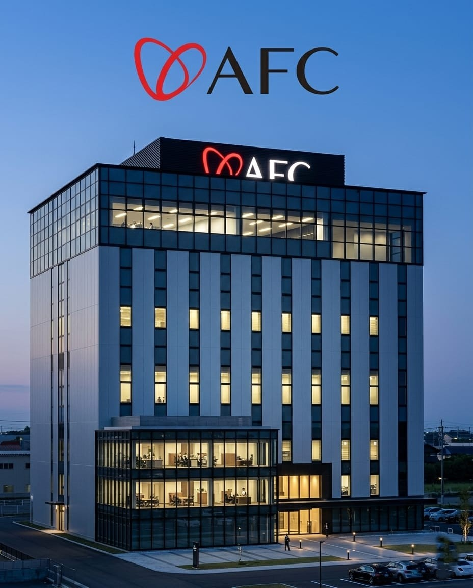
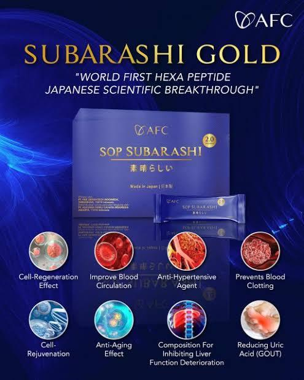
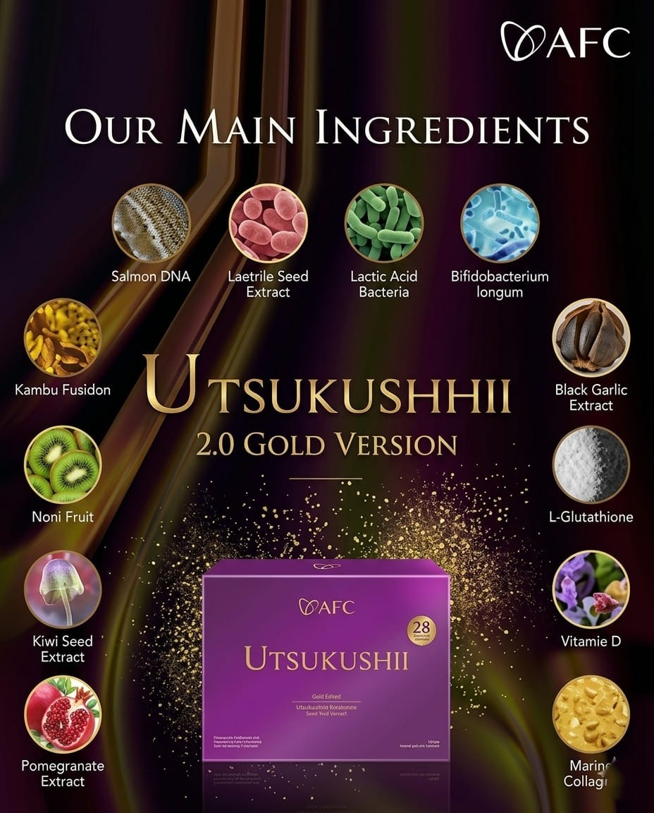
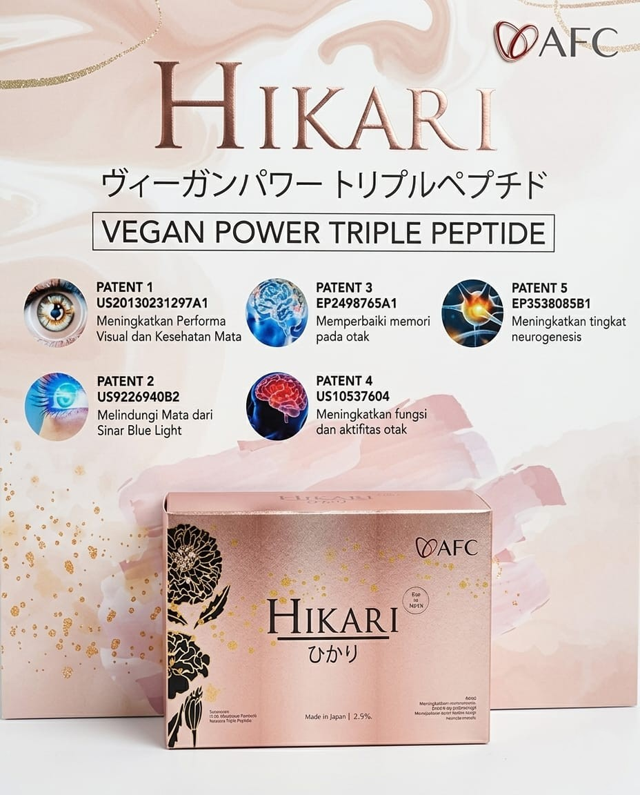
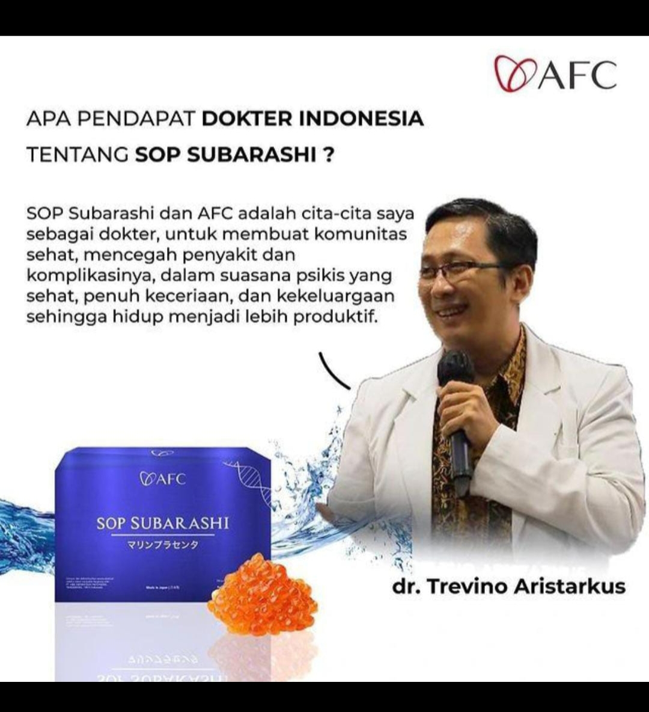
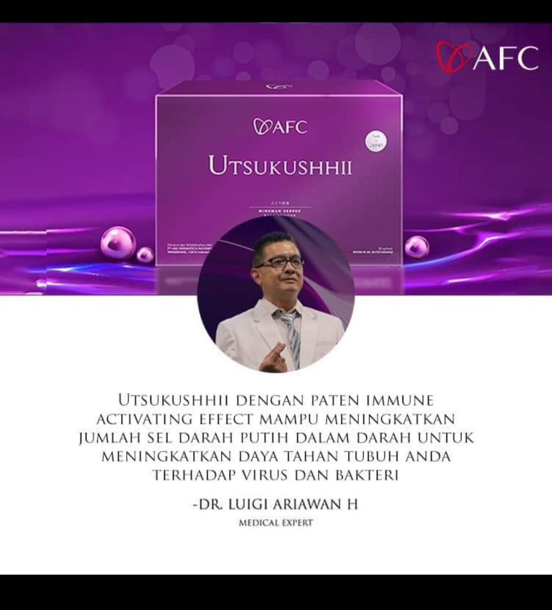
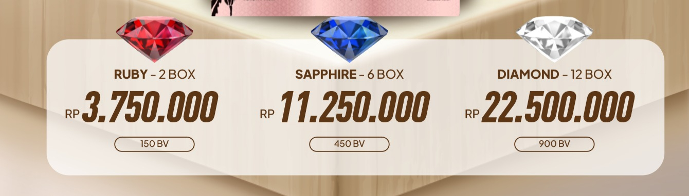

Tren saat ini yang dipicu oleh gaya hidup modern, pola makan, tingkat stres tinggi dan kurangnya aktivitas fisik menyebabkan penurunan kualitas kesehatan. Kondisi ini dialami oleh berbagai usia terutama ketika seseorang memasuki usia 40 tahun keatas, tubuh mulai mmelewati fase penurunan fungsi yang menjadi pintu masuk utama bagi berbagai kondisi degeneratif (penurunan fungsi sel, jaringan dan organ). pada kondisi ini, risiko terjadinya gangguan kardiovasikuler seperti hipertensi dan penyakit jantung koroner meningkat tajam akibat pengerasan pembuluh darah serta penurunan fungsi ginjal, hati dan organ lainnya. kondisi ini kerap berjalan berdampingan dengan gangguan metabolik seperti diabetes melitus tipe 2 yang dipicu oleh penurunan sensitivitas insulin serta masalah seperti osteotritis (kerusakan tulang rawan sendi) dan osteoporosis yang mulai membatasi mobilitas fisik
PRODUK AFC MERUPAKAN INOVASI MEDIS LUAR BIASA DARI JEPANG YANG MENJADI SOLUSI KESEHATAN SAAT INI
Profil Perusahaan

AFC (Asayama Family Club) adalah salah satu perusahaan farmasi tertua dan terbesar di Jepang dan merupakan perusahaan farmasi pertama yang terdaftar pada Tokyo Stock Exchange yang menghasilkan produk-produk farmasi dengan bahan alamiah tanpa bahan kimia berbahaya, produknya antara lain SOP Subarashi, Utsukushhii, dan Hikari.
AFC juga merupakan pabrik farmasi pertama yang telah mendapatkan sertifikat GMP (Good Manufacturing Practice) yang mana semua proses sudah berstandar mutu tinggi dengan sistem pengawasan (Quality Control) yang sangat ketat dan menerapkan kebijakan nol kecacatan dalam produksinya (Zero Defect).
AFC terkenal karena produk-produknya terutama SOP Subarashi, Utsukushhii dan Hikari inovatif dan berbasis penelitian (by research) yang didukung dengan uji klinis dan paten manfaat. Produk ini bukanlah obat melainkan Nutrisi Kesehatan yang dapat digunakan untuk terapi pendamping dan percepatan pemulihan bagi semua jenis sakit karena akan menutrisi sel-sel aktif dalam tubuh kita untuk melakukan regenerasi dan perlindungan tubuh secara alamiah.
Produk-produk AFC sudah terdaftar dan tersertifikasi di berbagai platform standar mutu dan layak konsumsi baik Nasional maupun Internasional sehingga produk-produk AFC aman untuk dikonsumsi.
Standar Keamanan & Sertifikasi Mutu

SOP Subarashi Adalah produk Hexa Peptide (6 Peptide) yang diformulasi dengan teknologi terkini dan dilengkapi bahan-bahan eksklusif yaitu Salmon Egg Extra (Salmon Ovary Peptide + Salmon Caviar Peptide) dari ikan Oncorhynchus Keta Salmon dan juga bahan aktif lainnya dengan konsentrat peptide nano size 600 dalton.
SOP Subarashi bekerja menutrisi sel induk (stem cell) dalam tubuh untuk mengaktifkan dan mempercepat proses regenerasi sel.
8 Paten Fungsi yang Dimiliki:
- Efek regenerasi sel.
- Memperbaiki sirkulasi pembuluh darah.
- Mencegah penggumpalan darah.
- Anti hipertensi.
- Peremajaan sel.
- Efek anti penuaan.
- Menjaga Kesehatan hati.
- Mengurangi asam urat.
Membantu Pemulihan & Gangguan Tubuh Antara Lain:

Utsukushhii memiliki bahan aktif utama yaitu Salmon DNA dari ikan Oncorhynchus Keta Salmon, Takara Combu Fucoidan dan tiga probiotik terkuat dan juga beberapa bahan aktif lain.
Utsukushhii menghasilkan peptide nano size 800 dalton and memiliki fungsi dalam menstimulasi NK-Cell dalam tubuh untuk melaksanakan fungsinya yaitu melindungi tubuh dari bakteri dan virus serta menghancurkan sel abnormal penyebab kanker dan tumor.
8 Paten Fungsi yang Dimiliki:
- Anti tumor agent.
- Efek mengaktifkan kekebalan tubuh.
- Zat terapi hepatitis C.
- Perlindungan terhadap infeksi.
- Mengurangi kadar racun dalam darah.
- Mencegah dan mengobati infeksi virus SARS.
- Perlindungan dari racun oksidatif.
- Menekan pertumbuhan tumor dan mengurangi efek obat anti kanker.
Membantu Pemulihan & Gangguan Tubuh Antara Lain:

Hikari Adalah Superfood untuk mata dan Otak dengan kandungan 100% VEGAN PEPTIDE, memiliki fungsi untuk perbaikan otak dan mata.
Hikari akan menstimulasi otak untuk melakukan dan mempercepat proses Neurogenesis.
5 Paten Fungsi yang Dimiliki:
- Memperbaiki memori otak.
- Meningkatkan fungsi dan aktivitas otak.
- Meningkatkan performa visual dan Kesehatan mata.
- Melindungi mata dari sinar blue light.
- Meningkatkan Tingkat Neurogenesis.
Membantu Pemulihan Gangguan Saraf, Otak & Mata Antara Lain:
Pendapat Dokter dan Keberhasilan Pemulihan


Gabung Bersama AFC Membership
Menjadi bagian dari Official Member AFC Jepang memberikan Anda jaminan keaslian produk serta berbagai keuntungan eksklusif untuk kesehatan fisik dan finansial.

Cara Menjadi Member
Cukup dengan melakukan pembelian paket produk resmi AFC (SOP Subarashi / Utsukushhii / Hikari) melalui kami, Anda akan langsung didaftarkan ke sistem pusat AFC Indonesia secara gratis utnuk menjadi member AFC. Terdapat tiga paket member yang dapat dipilih yaitu Ruby atau satu paket terdiri dari 2 box produk dengan nilai Rp.3.750.000,-, Paket Saphire atau tiga paket terdiri dari 6 box produk dengan Nilai Rp.11.250.000,- dan paket Diamond atau enam paket terdiri dari 12 box produk dengan Nilai Rp.22.500.000,-.
Keuntungan Eksklusif Member:
- Mendapatkan harga resmi paket terbaik dan promo berkala.
- Jaminan keaslian produk 100% langsung dari pabrik AFC di Jepang.
- Mendapatkan hak Bisnis AFC dan bonus harian, bulanan dan tahunan.
- Berkesempatan mendapatkan jalan-jalan gratis ke luar negeri setiap tahunnya.
- Berkesempatan mendapatkan produk gratis.
- Keanggotaan resmi yang berlaku selamanya dan bisa diwariskan.
Pesan Produk Asli Anda Sekarang
Dapatkan produk original AFC Jepang langsung dari agen resmi terpercaya. Klik tombol di bawah ini untuk terhubung langsung dengan WhatsApp kami guna konsultasi gratis dan pemesanan cepat.
Langkah Mudah Pemesanan:
- Klik tombol "Order Lewat WhatsApp" di bawah.
- Sebutkan nama dan produk yang ingin Anda pesan serta jumlahnya.
- Kami akan mengonfirmasi total biaya sesuai harga resmi.
- Produk dikirim langsung dengan pengemasan aman atau dapat mengambil langsung di stockist terdekat.
Order Lewat WhatsApp